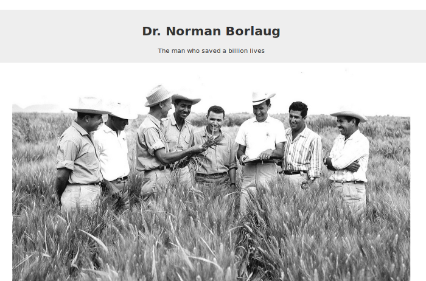

HTML PROJECTS: Tribute Page
Jul 03, 2020


Stats
- Knowledge required: HTML only
- Difficulty: Beginner friendly
- Estimate project completion time: 2 hours
Skill Focus of the project
Some of the HTML skills that you will practice while doing this project are:
- Adding different types of text to a web page. You will be practicing using text types like headings, lists, and links.
- Changing emphasis on text using bold and italics.
- mbedding an image on a web page and adding image captions.
Main Components of tribute page
You must include the following parts in your complete project:
- You must include a title or heading on the tribute page.
- You should include an image on the tribute page.
- You included image must have a caption.
- You should include a timeline of the life of the tribute in the form of a list.
The final project should look like this:
You can read the detailed technical requirements of the tribute page and tests you are required to pass on FreeCodeCamp.
Bonus Practice
- Create a html Wikipedia page clone.
- Create a html only Youtube page clone.
- Create a HTML-only Google Search Result page.
- Create a HTML-only Signup form page.
Where to publish your work
- Codepen
Codepen is the easiest one to setup. You just need an account to begin with. Then create a new pen and copy paste your HTML code there.
- Github
This one takes time to setup. However, you can use the Github.com web based editor to upload or copy paste your HTML.
Then you need to go to the repository setting to enable the projects to be viewed on .github.io/
Enjoyed reading this post? Share this on:
Twitter Facebook